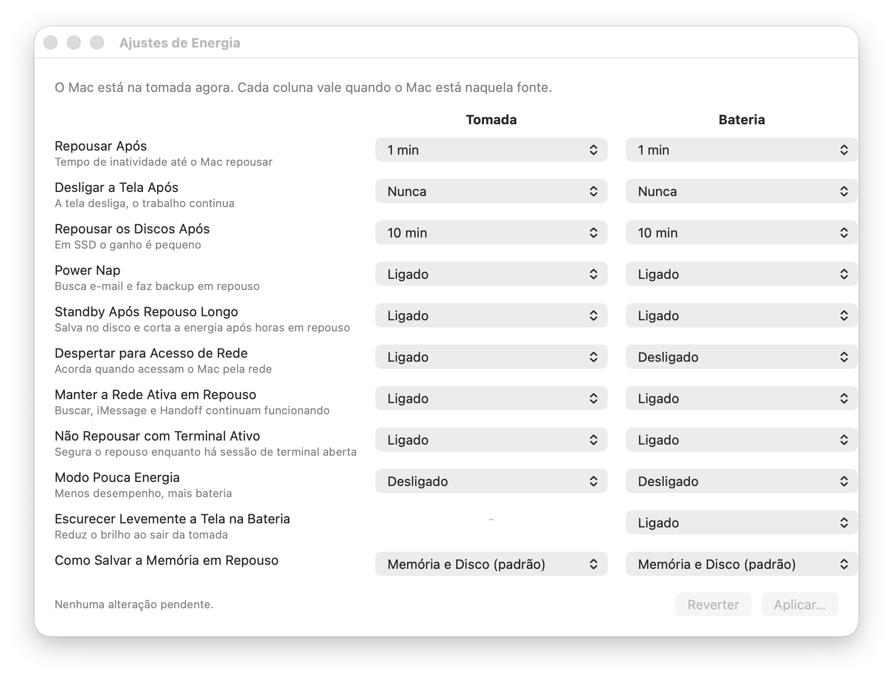

O MacBook não dorme com a tampa fechada.
Rode o Claude Code, um build, um download, qualquer tarefa longa, com o Mac fechado na mochila. Um clique na barra de menus, Touch ID, e um teste que prova que funcionou.
curl -fsSL https://raw.githubusercontent.com/philipecomputacao/neversleeps/main/install.sh | bash
macOS 14 ou superior · Apple Silicon · sem sudo · o instalador confere o sha256 antes de instalar
Usar o Claude Code com o MacBook fechado
É a situação para a qual o app existe. Três coisas precisam ser verdade, e só a primeira é trabalho do app. As outras duas ele ensina, com honestidade.
O Mac não pode repousar fechado
Clique na xícara → Impedir Repouso ao Fechar a Tampa → Touch ID. A xícara fica cheia. É o gesto inteiro.
Precisa de internet fechado
Deixe o iPhone entrar sozinho: Ajustes → Wi-Fi → Acesso Pessoal → Automaticamente. O Claude Code retenta quando a rede volta.
Calor
Sessão do Claude Code é leve: o Mac passa o tempo esperando a API. Build pesado ou teste em loop dentro de um bolso fechado não é.
Ligada não é a mesma coisa que provada.
Todo app de “manter acordado” diz que está ligado. Este é o único que fecha o Mac por um minuto e confere no registro do próprio sistema se ele repousou.
- Teste real da tampa. Feche o Mac 1 minuto, abra. O app lê
pmset -g loge o próprio batimento, e dá o veredito: aprovado ou reprovado, com hora e motivo. - Lê o sistema, nunca guarda. Toda vez que o menu abre, ele pergunta ao macOS. Mudou algo no Terminal? O menu conta a verdade.
- Confere depois de escrever. Se o macOS aceitou o comando e ignorou o valor, você fica sabendo.
- Avisa no momento do erro. Fechou o Mac com a trava desligada e ele repousou? Ao abrir, o app mostra o registro e oferece ligar.

Gratuito para sempre.
Sem versão Pro, sem assinatura, sem “desbloqueie”. O código é aberto sob licença MIT. O app não usa a rede, não tem telemetria, não checa atualizações: nada sai da sua máquina. Você pode ler cada linha.
Perguntas
Por que não usar o caffeinate?
caffeinate impede o repouso por ociosidade. Fechar a tampa passa por cima: o Mac dorme do mesmo jeito. O neversleeps grava pmset disablesleep, o único interruptor que sobrevive à tampa.
E o Amphetamine?
Consegue (Closed-Display Mode), mas é uma opção entre dezenas, e nada diz se segurou de verdade. O neversleeps é um interruptor só, e se testa.
Dá para fazer no Terminal?
Sim: sudo pmset -a disablesleep 1 é exatamente o que o app roda. O app acrescenta o estado visível na barra de menus, liga/desliga com um clique, o teste real e o aviso se você fechar o Mac com a trava desligada.
O macOS avisa que o app não é verificado. É seguro?
O app é assinado, mas ainda não notarizado pela Apple (isso custa uma conta de desenvolvedor anual). O instalador de uma linha confere o sha256 publicado na release antes de instalar. Instalando manualmente, clique com o botão direito → Abrir, uma vez. O código é aberto; você pode compilar você mesmo.
Ele pede senha toda vez?
A cada alteração de energia, sim, pelo diálogo do próprio macOS (Touch ID ou senha). É de propósito: não há regra de sudoers nem helper com root pendurado no sistema. Na janela de Ajustes, várias mudanças custam uma autenticação só.
Esquenta na mochila?
Depende do que está rodando. Sessão do Claude Code é leve. Compilação pesada ou testes em loop, dentro de um bolso fechado, esquentam, nesse caso, mochila aberta. A trava não muda a física.
Como desinstalo?
curl -fsSL https://raw.githubusercontent.com/philipecomputacao/neversleeps/main/desinstalar.sh | bash. A trava é ajuste do macOS e não sai com o app: o desinstalador pergunta se deve restaurar os padrões.